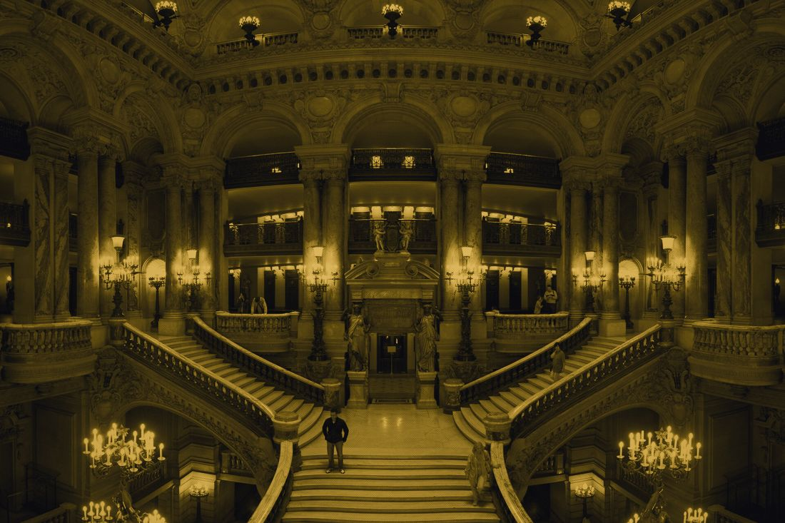
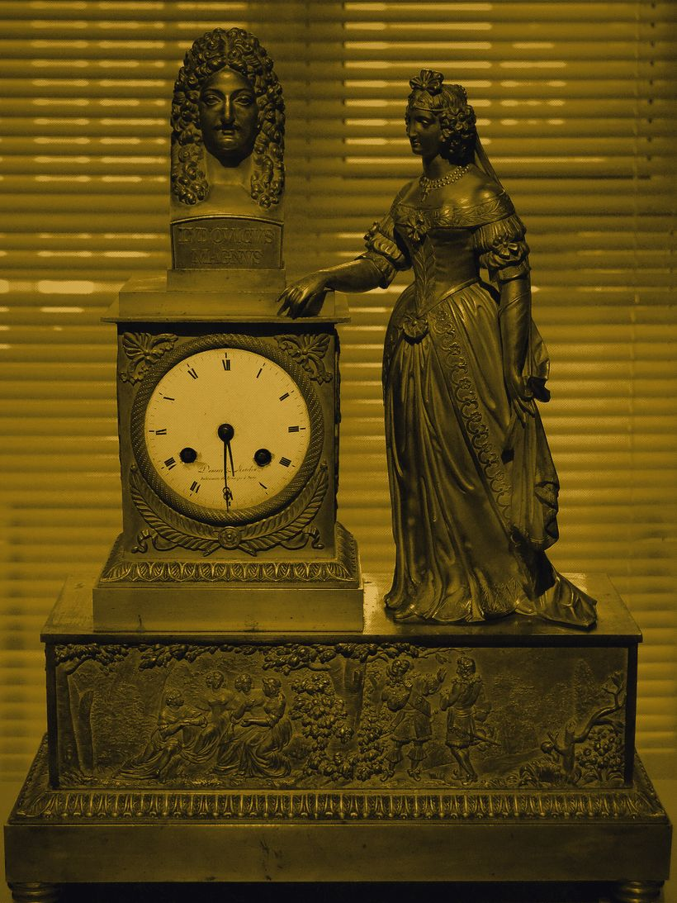
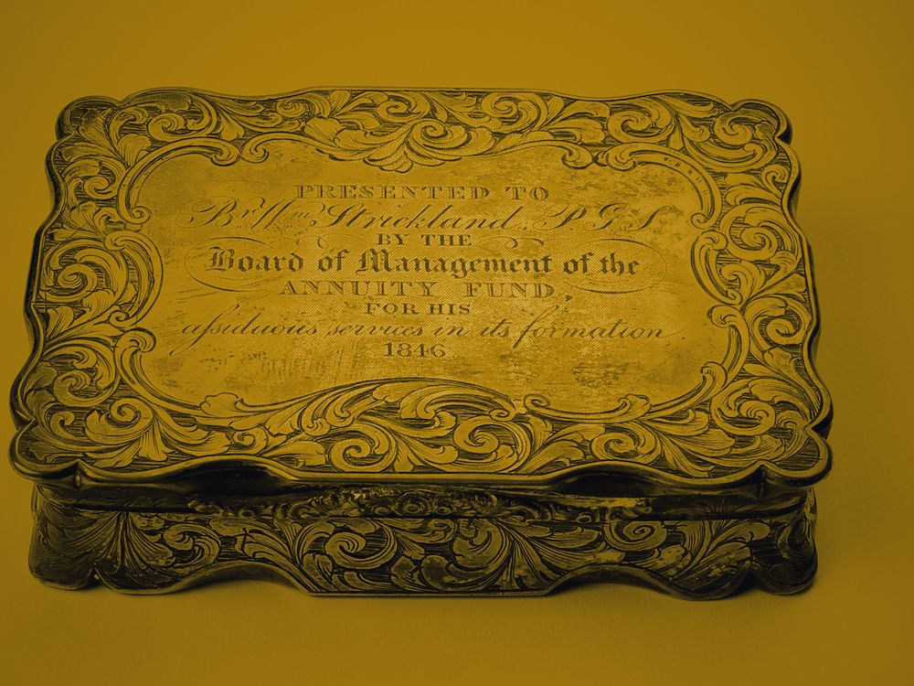
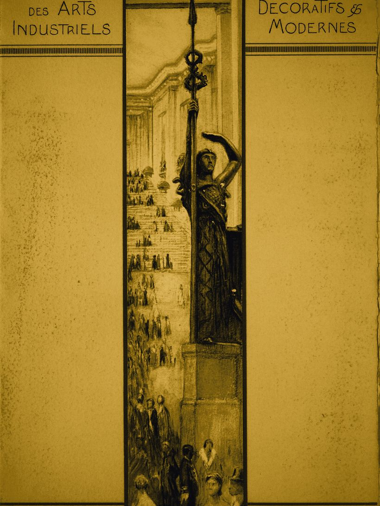
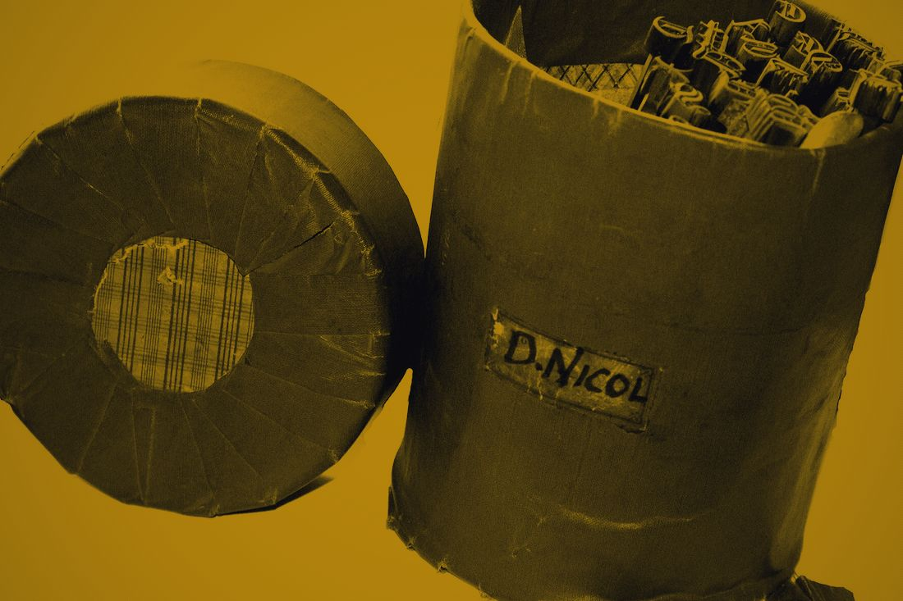

鎏金对称厅
这件 1926 年的银鎏金烟盒，盒盖内侧还留着第一位主人的缩写。
量体台在本厅东侧，一次只接待一位，可以带原件也可以带照片。
两侧纹样取自同一块烫金版。右半是这张版绕中缝旋转 180° 后的相位取样，与左半镜像同源、相位不同；向下滚动 100px，右侧相位沿反方向偏移 3px。文字不参与镜像：左栏贴缝右对齐、右栏贴缝左对齐，对称只发生在图样上。
No. 01银鎏金烟盒9.4 × 6.2 cmNo. 02鎏金铜框手镜18.5 cmNo. 03象牙柄压印辊24.0 cmNo. 04鎏金铜菜单架12.8 cm第 5 级空缺1971 年出库退回：盒盖铰链断裂，未修复，未重排No. 06鎏金香水瓶盖5.2 cmNo. 07金箔衬里名片匣10.1 cm
右半相位 0.0px · 位移比 100:3 · 阶梯 9 级
左侧读原版的相位，右侧读同一块版的镜像相位。相邻两级高差 56px，越往上纹样越稀，顶端只剩一道未压实的金线。
No. 08鎏金铜信封刀21.6 cmNo. 09暗金描线雪茄盒16.3 × 11.0 cmNo. 10鎏金铜框眼镜13.4 cmNo. 11金线锁边皮夹11.7 cmNo. 12鎏金墨水瓶座8.6 cmNo. 13金箔压纹书封19.2 × 24.6 cmNo. 14鎏金袖扣一对2.4 cmNo. 15暗金镶边放大镜9.8 cmNo. 16鎏金铜领针3.1 cm
器物与版次台账
这 16 件器物共用一张烫金版：1926 年第一版，同版复用 3 次。台账记的是实测尺寸、版次与漏金位置，编号连续，唯一的缺号是第 5 级。量体那天按这张表逐件对版，对不上的登记为「版不对器物」，不进当次量体单。
| 编号 | 器物 | 版次 | 实测尺寸 | 漏金位置 | 状态 |
|---|---|---|---|---|---|
No. 01 | 银鎏金烟盒 | 1926 一版 | 9.4 × 6.2 cm | 盒盖内侧左缘 | 在库 |
No. 02 | 鎏金铜框手镜 | 1926 一版 | 18.5 cm | 镜框右下弧 | 在库 |
No. 03 | 象牙柄压印辊 | 1926 一版 | 24.0 cm | 柄根接缝 | 在库 |
No. 04 | 鎏金铜菜单架 | 1926 二版 | 12.8 cm | 底座背面 | 修复中 |
第 5 级 | 空缺 | 1926 一版 | 未登记 | 未登记 | 1971 年退回，未修复 |
No. 06 | 鎏金香水瓶盖 | 1926 一版 | 5.2 cm | 盖顶同心弧内侧 | 在库 |
No. 07 | 金箔衬里名片匣 | 1926 一版 | 10.1 cm | 匣内隔板 | 在库 |
No. 08 | 鎏金铜信封刀 | 1926 一版 | 21.6 cm | 刀背中段 | 已出借 |
No. 09 | 暗金描线雪茄盒 | 1926 三版 | 16.3 × 11.0 cm | 盒底四角 | 在库 |
No. 10 | 鎏金铜框眼镜 | 1926 一版 | 13.4 cm | 右镜腿铰链 | 在库 |
No. 11 | 金线锁边皮夹 | 1926 二版 | 11.7 cm | 夹层折边 | 在库 |
No. 12 | 鎏金墨水瓶座 | 1926 一版 | 8.6 cm | 瓶座内壁 | 清洗中 |
No. 13 | 金箔压纹书封 | 1926 一版 | 19.2 × 24.6 cm | 书脊下缘 | 在库 |
No. 14 | 鎏金袖扣一对 | 1926 三版 | 2.4 cm | 扣面外圈 | 在库 |
No. 15 | 暗金镶边放大镜 | 1926 一版 | 9.8 cm | 镜圈左缘 | 已出借 |
No. 16 | 鎏金铜领针 | 1926 一版 | 3.1 cm | 针杆根部 | 在库 |
| 在库 11 件 · 已出借 2 件 · 修复与清洗 3 件 · 缺号 1 处 | 共 16 件 | ||||
版式与取样
中缝是一条 2px 的实色金线，用 div 画而不是 border：它只在 1024px 以上的视口存在，加载时自顶部拉下 600ms、分 24 段落位，随后两侧纹样自内向外逐级压实。两侧纹样来自同一张烫金版位图，右半是这张版绕中缝旋转 180° 后的相位取样，镜像同源、相位不同：版面上相邻 tier 的高差是 56px，所以两侧的错动在缝口一眼可见。
金色区域按一次真实压印做凸起，上缘 1px 象牙白高光、下缘 1.5px 暗棕 #3A2E1A 暗边；同一条纹样在缝口两侧的光向一致，因为它们是同一次压印的两次取样，不是两次压印。悬停时阶梯级块把金色饱和度抬升 6%、凸起高光加宽 0.5px，180ms 阻尼收尾，缓动 cubic-bezier(.34,.01,.2,1)。
窄屏（<768px）的再发明形式：中缝转 90° 成为一道横向金线，两个半版上下叠放，上侧取原版相位、下侧取绕缝 180° 的相位取样。镜像移轴照旧成立——每滚动 100px，下侧相位对应 3px 位移，线性映射不做缓动；阶梯收成 5 级、级差 40px，取样读的仍是同一块烫金版。切换藏品时上下两侧分别从相反方向推入 24px，交错 80ms。
减少动态时的降级形式：相位不再随滚动连续推进，而是按每 100px 滚动区间落 3px 的分段对应落位；阶梯保持 5 级、级差 40px，压实与推入以 150ms 不透明度过渡呈现同一块 180° 相位取样。光标进入金区时换成 1px 金色十字对位线，离开即消失。
右侧纹样永久保留一处漏金缺口：边缘是卡纸毛边，缺口下缘仍有一道未压实的金线。位置由当天日期对 7 取模决定，今天是第 1 处。
同一件藏品在不同日期打开，缺口落在不同的花纹上。它不传递信息，也不改善可用性。
馆藏图版
下面 5 张图版是公开档案件：1925 年博览会的节目单、巴黎歌剧院主楼梯的鎏金铸件、19 世纪初的鎏金铜壁炉钟、书籍烫金工具，以及一只银鎏金鼻烟盒。全部按炭黑与暗金两色重压，保留金面高光与四角减光，用来看版式与压印的实际关系。
-

巴黎歌剧院主楼梯。鎏金铜栏杆与成对灯柱构成中轴对称，是全案「对称只存在于图样」最早的实物参照。Wikimedia Commons · Benh LIEU SONG · CC BY-SA 3.0 -

Deniére et Matelin 工坊壁炉钟，19 世纪初。同心弧与直线线脚是本案烫金版的直接来源。Wikimedia Commons · 公有领域 -

银鎏金鼻烟盒，奥克兰博物馆藏 AM 2014.17.2-1。压印花纹与盒盖内侧的印记位置一致。Wikimedia Commons · CC BY 4.0 -

1925 年巴黎国际装饰艺术与现代工业博览会节目单封面。阶梯状线脚与同心弧，与本案 9 级阶梯同源。Wikimedia Commons · CC0 -

书籍烫金工具，爱丁堡 David Nicol 旧藏。成套压印头决定了同一处纹样在不同器物上的相位差。Wikimedia Commons · Edinburgh City of Print · CC BY 2.0
预约与到店规则
本周的到店时段每格 40 分钟，两间量体室同时开放。选好时段后店员会电话确认；量体当天带原件或带照片都可以，只要能看到盒盖内侧的缩写或印记。
尚未选时段。14:20 与 14:40 两格处于待确认状态，其余 3 格可直接预约。
这个时段刚被订走：14:20 与 14:40 两格冲突，错误码 BOOK-409。换一个时段，或者留电话让店员手工排。
本周的到店时段已排满。留下电话，下周一上午十点前我们会打给你。
- 每格 40 分钟：前 25 分钟看器物与版次、对台账，后 15 分钟压印试片，试片可以带走。
- 迟到超过 10 分钟，这一格转给候补，店员另约；改约请在到店前 4 小时之前打电话。
- 出借与修复中的 5 件器物不在本厅，量体时看照片与拓片，归还后再补一次对版。